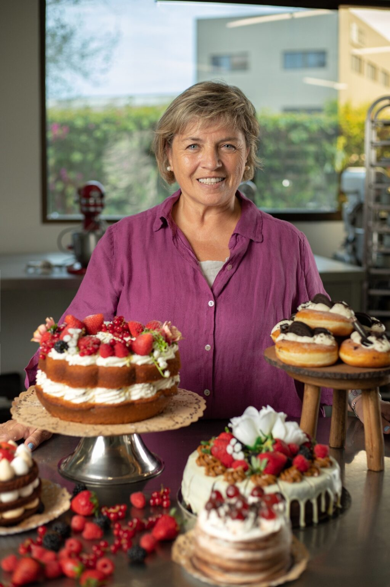

Nuestro secreto, hacerlo con cariño
PASTELERÍA DULCE DE LECHE, cuenta gran variedad productos tanto dulces como salados, todos ellos elaborados en su propio obrador mediante procesos tradicionales, sin aditivos ni conservantes y buscando siempre el mejor sabor. Facturas artesanales, alfajores de maicenas y empanadas criollas son tan solo alguno de los exquisitos productos que se pueden encontrar en las pastelerías.
No obstante, ninguna casa se construye por el tejado, por ello debemos conocer a la mujer creadora de Dulce de Leche. Su nombre es Elisabet quién, nacida en Argentina y con orígenes alemanes, ya abrió en 1990 su primera pastelería en Córdoba, Argentina, propiciada por su pasión innata por la repostería.
1990
Primera apertura tienda Dulce de Leche en Argentina
2001
Apertura Dulce de Leche en España
2017
Puesta en marcha del Obrador Dulce de Leche Factory
